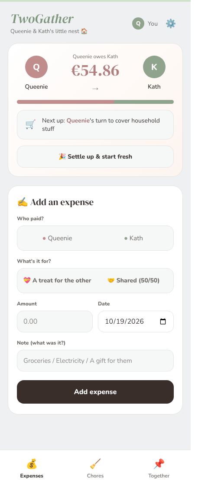

In use · 2 users
TwoGather
A household budget management app, built for two.
My roommate and I kept household costs in Notes and did the math once a month — we always forgot something.
How it feels now
Whoever pays logs it and the balance updates instantly. It's saved us real time — no more sitting down once a month to do the math, and whoever owes more just buys the next round of groceries.
Expense trackingAutomationClarity
Interested in this project? Contact me
